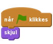
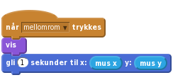
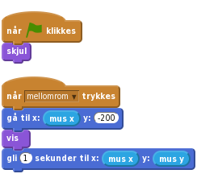
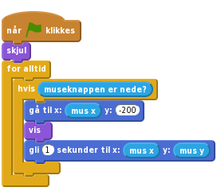
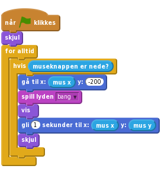
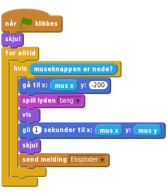
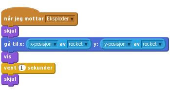
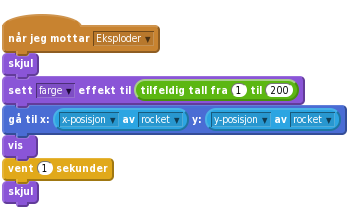
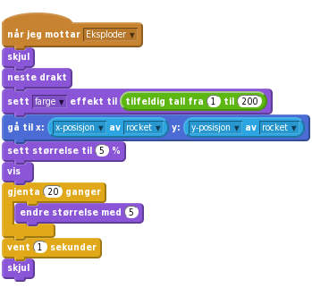
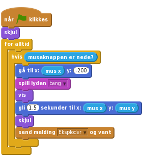

1.3
Fyrverkeri
I dette prosjektet skal vi skyte opp fyrverkeri over en by.

Vi starter med å importere forskjellige bilder vi skal bruke i spillet
slett.utendørs/city-with-water. , for å legge til en rakett-figur i prosjektet,
, for å legge til en rakett-figur i prosjektet, ressurser/rocket.png.Vi vil at raketten skal skjules når du klikker på det grønne flagget.

Nå vil vi gjerne at raketten skal bevege seg mot musepekeren når du trykker på mellomromstasten.
Legg til en kloss når mellomrom trykkes. Deretter lager vi to klosser som gjør raketten synlig og lar den bevege seg mot musepekeren.

Klikk på det grønne flagget.
Fyrverkeri pleier ikke å fly fra side til side, så du bør gjøre det slik at raketten alltid flyr mot musepekeren fra bunnen av skjermen.
Før du fyrer opp raketten: bruk klossen gå til for å få raketten til å flytte seg til bunnen av skjermen, men slik at den er samme sted horisontalt.

Klikk på det grønne flagget.
for alltid- og hvis museknappen er nede-klosser.Flytt skriptet fra når mellomrom trykkes til når grønt flagg klikkes, slik at det blir seende slik ut:

Klikk på det grønne flagget.
Nå skal vi få raketten til å eksplodere med et digert smell!
Første steg for å få raketten til å eksplodere er å spille av en bang-lyd før den begynner å bevege seg, og deretter gjemme seg når den når musepekeren. For å importere en lyd gå til fanen Lyder og klikk på Last opp lyd fra fil, . Last opp lyden ressurser/bang.wav.

Neste steg er å få raketten til å sende en melding til resten av spillet når den eksploderer. Vi skal lytte etter meldingen senere. Lag en ny melding som heter Eksploder.

Klikk på det grønne flagget.
gli-klossen slik at raketten skjules akkurat samtidig som det smeller.ressurser/firework1.png.Når denne figuren får meldingen Eksploder passer vi på at den er gjemt, flytter den til raketten ved bruk av klossen gå til, viser den og skjuler den igjen 1 sekund senere.

Klikk på det grønne flagget.
Nå skal vi lage litt variasjon slik at ikke alle eksplosjonene ser helt like ut.
Vi kan gjøre hver eksplosjon unik ved å bruke klossen sett fargeeffekt og velge en tilfeldig farge før eksplosjonen vises.

Drakter-fanen til firework1. Ved å klikke Last opp drakt fra fil, , kan du legge til firework2.png, firework3.png og firework4.png fra ressurser.Klarer du å få eksplosjonene til å bruke forskjellige drakter? (Hint: Du kan for eksempel bruke neste drakt et passende sted i skriptet til Firework1.)
Klikk på det grønne flagget.
Til slutt, gjør eksplosjonen større etter at raketten eksploderer! I stedet for å vente i 1 sekund sett størrelsen til figuren til 5% før den vises, og etter at den blir synlig øk størrelsen med 5 tjue ganger ved bruk av klossen gjenta.

Klikk på det grønne flagget.
Prøv å gjøre hver eksplosjon enda mer unik: endre størrelsen og veksthastigheten for eksplosjonen.
Husker du at vi tidligere hadde et problem med å holde museknappen nede?
Dette problemet oppstår fordi når raketten sender sin melding om eksplosjonen, gjentar den hvis-løkken med en gang. Dermed blir det sendt en eksplosjonsmelding før den forrige er ferdig med animasjonen.
I programmeringsverden kaller vi denne type problemer for bugs, fordi man i gamle dager (da datamaskiner var mye større) kunne ha problemer med at innsekter ble fanget inne i datamaskinene og ødela programmer.
For å fikse dette kan du erstatte klossen send melding med send melding og vent. Da vil ikke løkken gjentas før den forrige eksplosjonen er ferdig. Gå tilbake til rocket og endre skriptet:

Klikk på det grønne flagget.
Gratulerer, du er ferdig! Nå kan du kose deg med spillet!
Ikke glem å dele spillet ditt med alle dine venner og familien! Klikk på Legg ut i menylinjen.